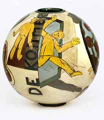
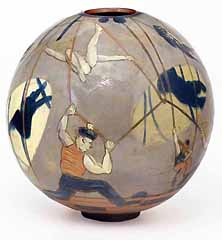
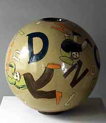

| Peder
Rasmussen
Danish studio potter

Danish ceramist Peder Rasmussen´s twelve sphere-shaped vases
in the museum KERAMION in Frechen
have evolved over the past two years. They emerged as a reaction
to twenty years of working with form and ornamental decoration solely.
In the early eighties the Danish artist worked a lot with the human
figure, with a kind of post-pop painting on the pots. Now again
he recognized a need to induct story, content and sometimes meaning
into the works. But the overall intention still is – as it
always was - the making of beautiful, decorative pots.
The shape had to be simple to make room for the decoration, and
the sphere has the advantage, that it almost automatically leads
the spectator to take a tour around it. And it is a shape that provides
you with a lot of painting space. A small foot and a hole at the
top: there you have the perfect three-dimensional background –
as ideal for the potter as the square canvas is for the painter.

Some of the decorations on this new series of vases derive from
Rasmussen´s interest in the connection between ornament, letters
– sometimes text - and the human figure. However they are
not linked up by a general, continuing story – they are all
individual works with each their special motif and atmosphere.
Some motifs are very straightforward: A man walking, jumping, tumbling
and falling – accompanied by these same words. Other motifs
tell simple stories about relations between boys and girls - or
men and women. One motif directs you around the pot to discover
the content of a spiral shaped, continuing story; another can be
read as a four-chapter story. And others depict dreamy conditions
- like people flying around in their own peaceful worlds. The atmosphere
of some of the motifs is indeed one of weightlessness and tranquillity.

All the vases are made in a plaster mould, and all are more or
less the same size – ca. 55 cm (21.7 in.). A black German
earthenware clay is used under a slip-decoration, which has been
both painted and engraved – the so called sgrafitto technique.
All vases are glazed with a classic, glossy lead-glaze fired at
1025 C.
The exhibition Peder Rasmussen: Globes will be on view at
the KERAMION Foundation in
Frechen, Germany from May 7 – July 30, 2006.
More Featured Artists
More Articles |
{kind=link}
{kind=link}
{kind=link}